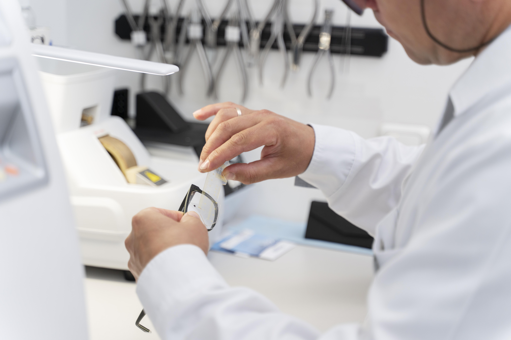
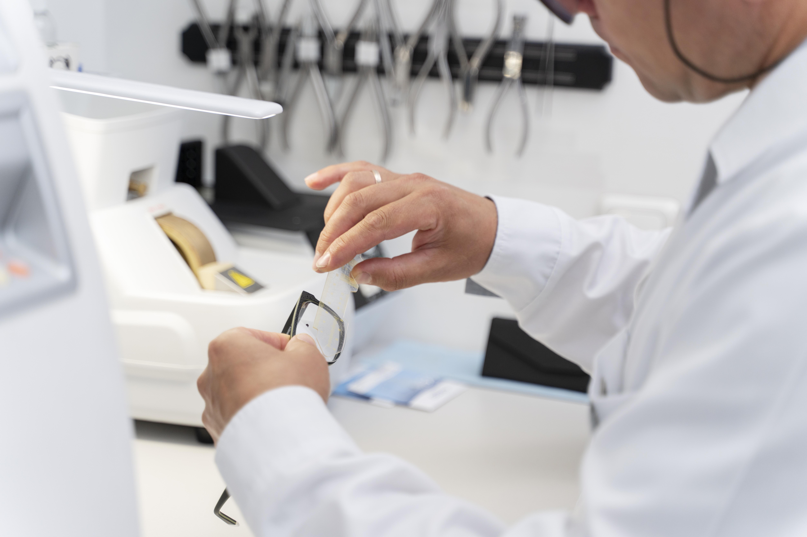

À propos du Centre Ophtalmologique Dr Alaaeddine Sounny
Situé à Dcheira-El Jihadia, près d’Agadir, le Centre Ophtalmologique du Dr Alaaeddine Sounny est spécialisé dans le diagnostic, le traitement et la chirurgie des maladies oculaires. Notre mission est de préserver et d’améliorer votre vision grâce à des équipements de dernière génération, un accompagnement personnalisé et une approche médicale humaine.
Consultations spécialisées pour enfants, adultes et seniors, assurées par le Dr Alaaeddine Sounny, ophtalmologue expérimenté à Agadir.
Technologie de pointe pour un diagnostic précis et des interventions chirurgicales sûres, incluant la cataracte et les troubles de la rétine.
Équipe médicale qualifiée, accueil chaleureux et suivi attentif pour garantir le meilleur confort visuel à chaque patient.
 
